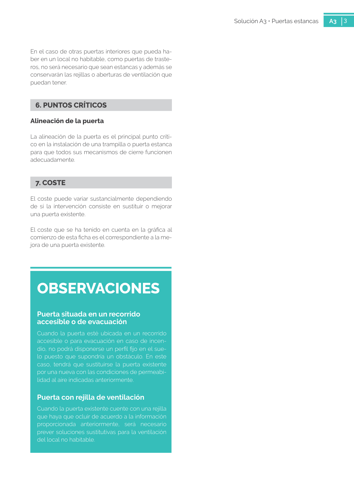

Guia de rehabilitacion frente al radon Fichas · edición sin-fecha · capa guia
Documento GUIA-PDF-f3314b0414fe · SHA-256 del PDF e58e54b822cf4ab00e258f0eb50c0f06a8c04e3730a7f530d224485e2a5bb02e
Página física 40 de 82.
Copia fiel del PDF fuente · Fuente oficial
Ficha de la disposición en la fuente oficial
Créditos y autoría en el PDF fuente. Reproducción con cita de fuente y autores.
Permiso literal: Se permite la reproducción total o parcial del contenido de este nible en el momento de su publicación. No se aceptará por las institu documento siempre y cuando se cite la fuente original
Este documento ha sido elaborado por el Instituto de ciencias
de la construcción Eduardo Torroja (IETcc) bajo la supervisión
de la Dirección General de Agenda Urbana y Arquitectura del
Ministerio de Transportes, Movilidad y Agenda Urbana (MITMA).
El IETcc, perteneciente al Consejo Superior de Investigaciones
Científicas (CSIC), es el centro de investigación en edificación
de referencia en España. La Unidad de Calidad en la Construc
ción del IETcc asesora al MITMA en la elaboración del Código
Técnico de la Edificación que, desde el año 2019, cuenta con la
sección HS6 Protección frente a la exposición al radón.
Dirección y Coordinación:
Ministerio de Transportes, Movilidad y Agenda Urbana
Isabel Marcos Anasagasti
Raquel Lara Campos
Eduardo González de Prado
Instituto de ciencias de la construcción Eduardo Torroja CSIC
Pilar Linares Alemparte
Autoras:
Pilar Linares Alemparte
Sonia García Ortega
Colaboradoras:
Virginia Sánchez Ramos
Karina Angélica García Pardo
Edita:
Centro de Publicaciones Secretaría General Técnica
Ministerio de Transportes, Movilidad y Agenda Urbana©
Entidad colaboradora:
Consejo Superior de Investigaciones Científicas · CSIC
Ministerio de Ciencia e Innovación
Catálogo de publicaciones de la Administración General
del Estado: publicacionesoficiales.boe.es
Centro virtual de publicaciones del Ministerio de Transpor
tes, Movilidad y Agenda Urbana: www.mitma.gob.es
Página web del Código Técnico de la Edificación:
SECRETARÍA GENERAL DE www.codigotecnico.org AGENDA URBANA Y VIVIENDA MINISTERIO GOBIERNO DE TRANSPORTES, MOVILIDAD DE ESPAÑA Y AGENDA URBANA DIRECCIÓN GENERAL DE
Maquetación y diseño gráfico: AGENDA URBANAY ARQUITECTURA
Lapizmente. Estrategia • Diseño Gráfico
CIENCIAFotografía portada: GOBIERNODE ESPAÑA MINISTERIODEE INNOVACIÓN
Sonia García Ortega
Los contenidos o ideas recogidas en este documento pertenecen a
sus autores. Este documento está basado en el conocimiento dispo Se permite la reproducción total o parcial del contenido de este
nible en el momento de su publicación. No se aceptará por las institu documento siempre y cuando se cite la fuente original y a sus
ciones ni los autores implicados responsabilidad de ningún tipo por el autores.
uso de estas recomendaciones. Las figuras tienen carácter ilustrativo
y no deben interpretarse como detalles constructivos.Formato: Texto de la página (Markdown)
3 Solución A3 • Puertas estancas A3 3 En el caso de otras puertas interiores que pueda ha ber en un local no habitable, como puertas de traste ros, no será necesario que sean estancas y además se conservarán las rejillas o aberturas de ventilación que puedan tener. 6. PUNTOS CRÍTICOS Alineación de la puerta La alineación de la puerta es el principal punto críti co en la instalación de una trampilla o puerta estanca para que todos sus mecanismos de cierre funcionen adecuadamente. 7. COSTE El coste puede variar sustancialmente dependiendo de si la intervención consiste en sustituir o mejorar una puerta existente. El coste que se ha tenido en cuenta en la gráfica al comienzo de esta ficha es el correspondiente a la me jora de una puerta existente. OBSERVACIONES Puerta situada en un recorrido accesible o de evacuación Cuando la puerta esté ubicada en un recorrido accesible o para evacuación en caso de incen dio, no podrá disponerse un perfil fijo en el sue lo puesto que supondría un obstáculo. En este caso, tendrá que sustituirse la puerta existente por una nueva con las condiciones de permeabi lidad al aire indicadas anteriormente. Puerta con rejilla de ventilación Cuando la puerta existente cuente con una rejilla que haya que ocluir de acuerdo a la información proporcionada anteriormente, será necesario prever soluciones sustitutivas para la ventilación del local no habitable.
